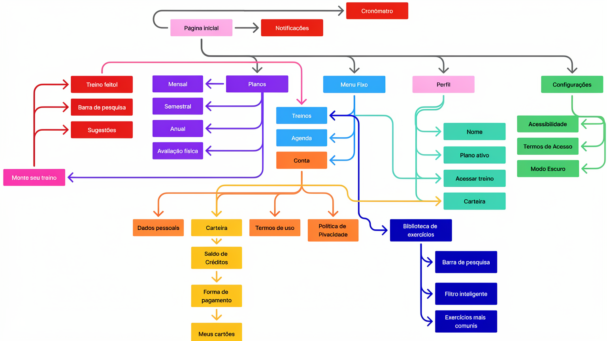
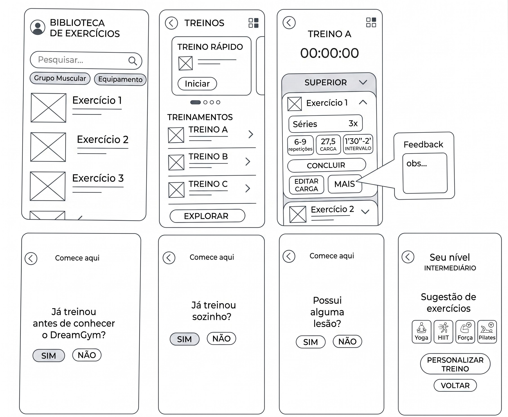
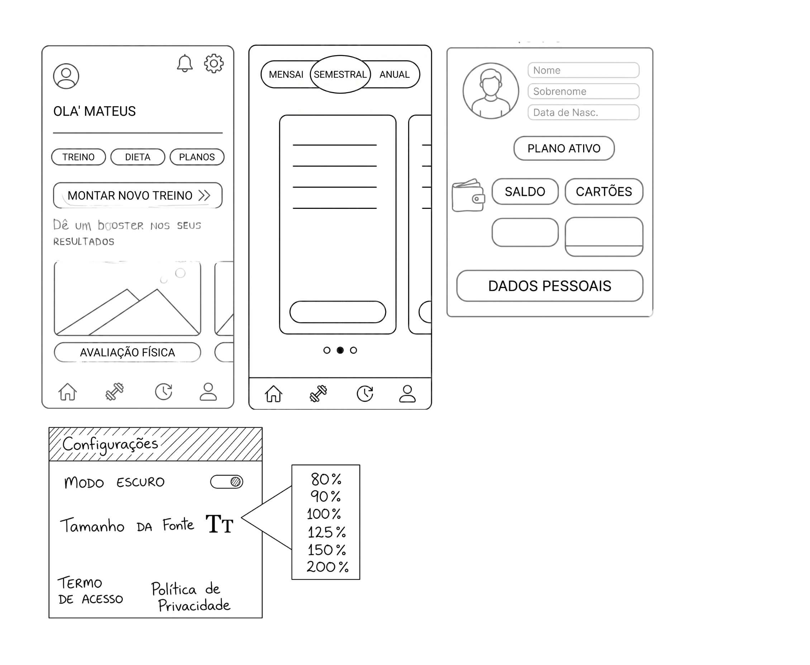

UX/UI Case Study
Desenvolvendo Solução para Academia de Bairro
Um projeto de design centrado no humano que transforma a experiência digital de academias locais. O foco foi substituir métricas de vaidade por conversão real e retenção de alunos, colocando o acolhimento e o pertencimento no centro da solução.
O Desafio e o Problema de Negócio
Academias de bairro enfrentam altas taxas de cancelamento. A análise revelou que o churn não é causado apenas por "falta de disciplina" dos alunos, mas por uma experiência intimidante e despersonalizada. A alta carga cognitiva, a falta de suporte nos horários de pico e a dependência intimidante de instrutores escassos geram a sensação de "invisibilidade".
A Pergunta-Chave: Como transformar a transição físico-digital em uma experiência acolhedora, replicando o sentimento de pertencimento do bairro em uma interface mobile que atue como suporte personalizado e promova o ROI da academia?
Pesquisa e Persona
Matheus, 22 anos
Biografia: Matheus é um jovem da era digital que busca agilidade e independência. Ele valoriza ferramentas que permitam a execução de tarefas sem a necessidade constante de um intermediário humano, preferindo o suporte tecnológico para guiar seu progresso.
Perfil Profissional e Acadêmico: Trabalha meio período como assistente administrativo em um escritório de contabilidade e dedica o restante do dia aos estudos.
Rotina de Treino: Possui uma janela de tempo muito restrita, frequentando a academia geralmente por apenas 1 hora, das 20h às 21h.
Dores e Frustrações
- Falta de Suporte: Sente que a academia não oferece o suporte necessário para otimizar seu treino individualmente.
- Dependência Intimidante: Frustra-se por ter que chamar o professor a cada dúvida, o que consome o pouco tempo que ele tem disponível para treinar.
- Sensação de Invisibilidade: Como aluno que treina em horários de pico e por pouco tempo, ele pode se sentir "perdido" ou "incapaz" sem uma orientação clara.
Estratégia: Design Emocional
Diferente de apps que focam apenas em performance tecnológica, a estratégia foi desenhada sobre quatro pilares para impulsionar a retenção e o valor da marca:
- Clareza Cognitiva: Redução de ruído visual para não sobrecarregar o usuário.
- Motivação Comportamental: Metas visuais e streaks gerando satisfação e aumentando a retenção.
- Acolhimento Humano: Tom de voz empático e onboarding emocional para reduzir ansiedade.
- Pertencimento: Gamificação e desafios coletivos para forjar comunidade genuína.
Arquitetura da Informação
Mapa abaixo representa o fluxo completo da interface do aplicativo, desde a página inicial até as funcionalidades mais profundas, organizando a navegação de forma intuitiva e acessível para o usuário.

Estrutura do Aplicativo
A arquitetura foi mapeada para garantir que as decisões de navegação fossem lógicas e fundamentadas na redução da carga cognitiva, divididas em duas frentes centrais:
Navegação Principal
Página Inicial: Cronômetro, notificações, sugestões e barra de pesquisa.
Menu Fixo: Treinos, Agenda e Conta.
Perfil: Nome, plano ativo, acesso ao treino e carteira.
Configurações: Acessibilidade, termos de acesso e modo escuro.
Funcionalidades de Destaque
Planos: Mensal, semestral, anual e avaliação física.
Biblioteca: Barra de pesquisa, filtro inteligente e exercícios.
Carteira: Saldo de créditos, forma de pagamento e cartões.
Monte seu treino: Personalização completa do plano de exercícios.
Sobre a interface e prototipagem
Os protótipos de baixa fidelidade foram estruturados e evoluídos com base em fundamentos sólidos de ergonomia cognitiva e design de interface, garantindo usabilidade e acessibilidade (a11y).

1. Consistência Visual e Gestalt
A transição de traços irregulares para wireframes limpos reduziu a carga mental (Lei da Constância). O alinhamento ortogonal e o agrupamento lógico (Lei da Proximidade) respeitam o modelo mental dos usuários em dispositivos móveis, facilitando a navegação na Arquitetura de Informação.
2. Acessibilidade (WCAG)
A inclusão explícita de controles para Modo Escuro e escalonamento de Tamanho da Fonte (80% a 200%) atende critérios diretos de acessibilidade para usuários com baixa visão ou fadiga ocular.
3. Visibilidade do Status do Sistema
Aplicação direta da Primeira Heurística de Nielsen: uso de ícones universais combinados com rótulos de texto e indicadores de carrossel para fornecer feedback imediato sobre o estado atual do aplicativo.
4. Affordance Tátil e Lei de Fitts
Botões e campos de ação consolidados em formatos *pill-shaped* claros, oferecendo *affordance* óbvia. Alvos de toque (touch targets) foram redimensionados para prevenir erros e posicionados próximos à "Thumb Zone" (área do polegar), minimizando o tempo de movimento e o esforço motor (Lei de Fitts).
5. Efeito de Posição Serial
Ações e ícones cruciais (como Home e Perfil) foram posicionados nas extremidades da barra de navegação, explorando os efeitos de primazia e recência da psicologia cognitiva para facilitar a memorização espacial.

Projeção de Impacto e KPIs
Com o produto em fase de transição para alta fidelidade, as métricas de sucesso foram arquitetadas para validar a eficiência técnica da interface e o retorno direto para o negócio:
Retenção de Iniciantes
Meta projetada de redução de churn no primeiro trimestre em 20%, eliminando a dependência do instrutor físico através do mapeamento claro de treinos.
Otimização Operacional
Projeção de queda de 30% no tempo gasto pela equipe com tarefas repetitivas, redirecionando o fluxo de trabalho para o suporte estratégico.
Gostou do projeto?
Entre em contato para discutirmos arquitetura de informação e design focado em conversão.
Fale Comigo